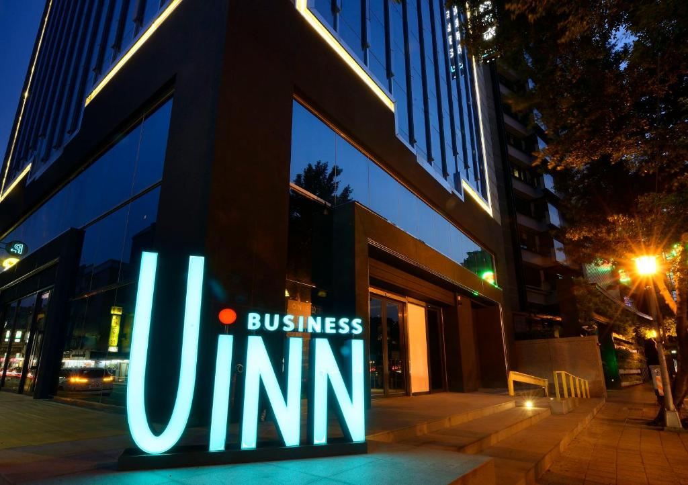
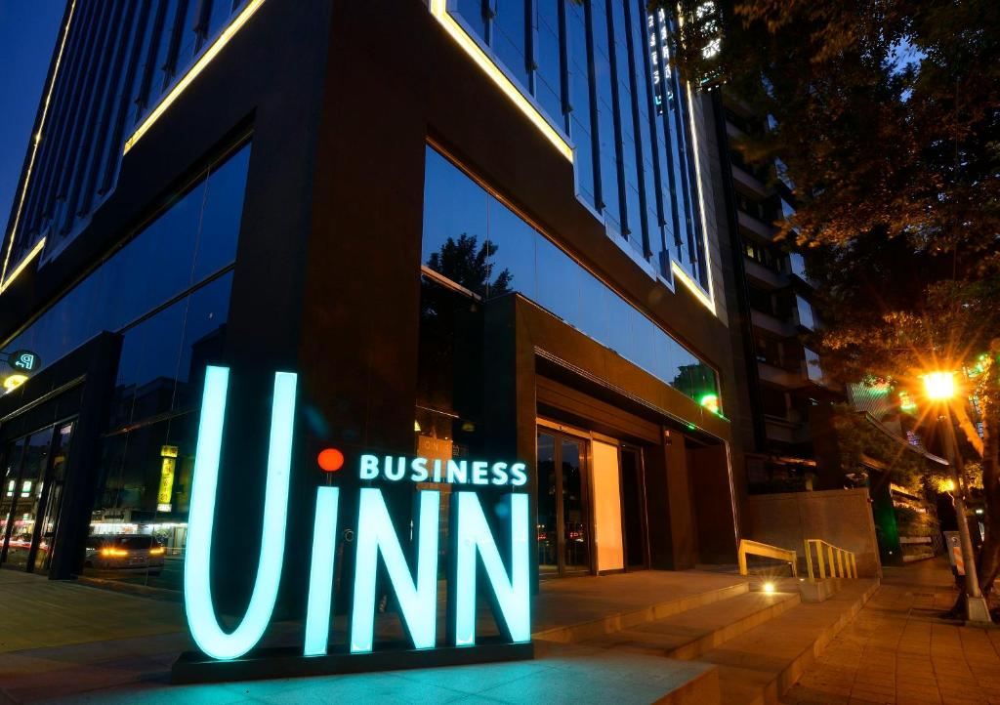

士林官邸_士林官邸公園
士林官邸有精緻的庭園造景設計，蟲鳴鳥叫、景色秀麗，是休閒遊憩的絕佳場所。 當年因為緊鄰著中山北路，佔據極佳的地理位置，可快速直達總統府，加上後有福山做為倚靠 ，優越的地勢，所以成為蔣故總統官邸。1996年，官邸首度開放市民觀賞園藝與休憩使用。 玫瑰園，是蔣夫人最喜愛的花園；西式庭園中浪漫美好的風光，是新人婚紗照最常取景的地方； 中式庭園裡的拱橋、曲池、流水等東方庭園造景，則令人彷彿置身古代中式庭院。 官邸公園周圍為福山山系所環抱，佔地9.28公頃。其中的士林官邸於民國三十九年因先總統蔣公居住於此而設立，因為總統居住於此的關係， 附近嚴禁改建及新建，使得官邸公園能維持原有的自然景觀。
 
